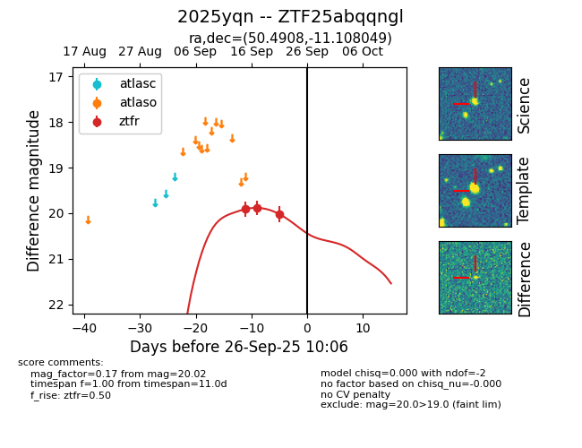

FINK: ZTF25abqqngl
Lasair: ZTF25abqqngl
ALeRCE: ZTF25abqqngl
TNS: 2025yqn
YSE: 2025yqn
ZTF25abqqngl (ztf,fink)
2025yqn (tns,yse)
equatorial (ra, dec) = (50.4908,-11.10805)
galactic (l, b) = (195.9570,-51.21269)

last ztfr=20.02
3 ztfr detections